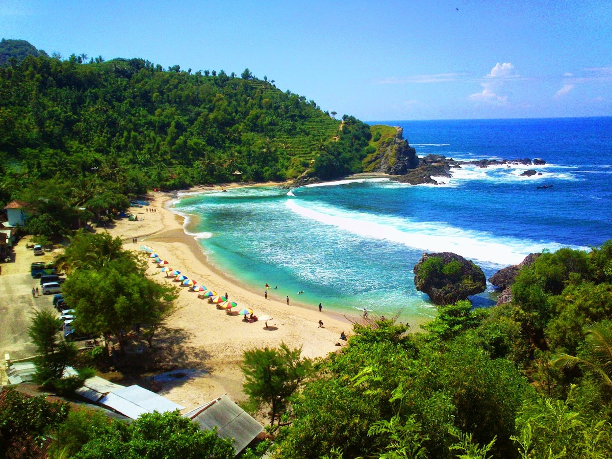
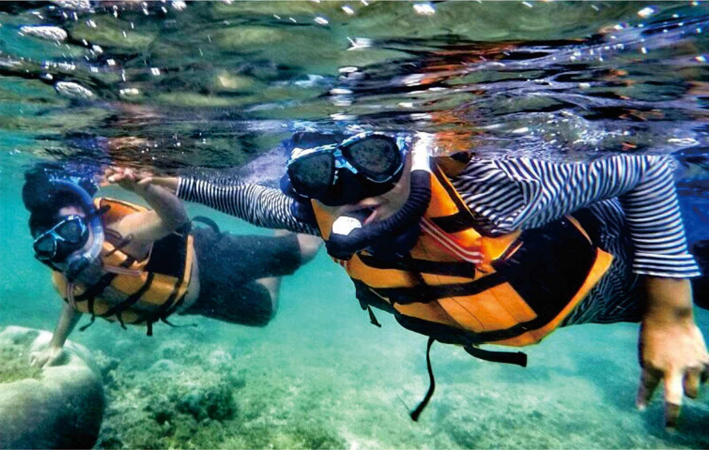
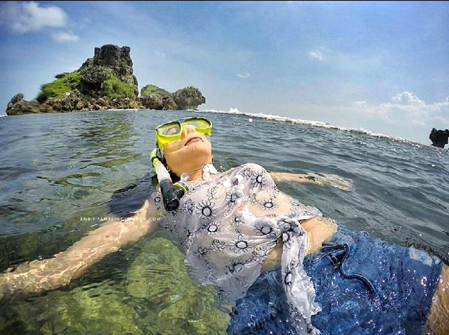
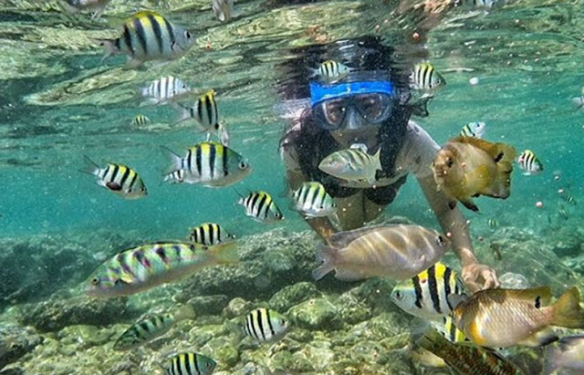

Pantai Nglambor
Ganasnya ombak pantai-pantai di selatan Jogja sering kali membuat orang bergidik ngeri dan segan untuk mendekati. Ombak yang datang berkejaran dari arah lautan luas seolah berlomba menghalau agar kita tak mendekati airnya. Tak seperti pantai-pantai di sisi utara Jawa yang lebih ramah, tepian daratan yang langsung menyapa luasnya Samudera Hindia ini bukan tempat sesuai untuk menikmati asyiknya berenang di air asin atau serunya snorkeling menyaksikan keindahan panorama bawah laut bersama ikan-ikan kecil. Hingga kita terpaksa harus puas bermain air di pinggiran, di tempat buih-buih lautan mulai menghilang. Namun ketika berkunjung ke Pantai Nglambor, berenang dan snorkeling di pantai selatan yang tadinya terasa tak mungkin, nyatanya bisa dilakukan.
 Kawasan Pantai Nglambor merupakan salah satu destinasi snorkeling di kawasan pesisir selatan Jogja yang memiliki panorama dasar laut menakjubkan dengan ragam terumbu karang dan biota laut. Ikan jenis Sergeant Major, Jambrong dan beberapa ikan kecil lainnya adalah penghuni tetap yang terlihat sering berenang bergerombol atau bermain petak umpet di celah-celah terumbu karang. Pemandangan cantik yang tertutup ombak ini sangat dijaga oleh masyarakat sekitar Pantai Nglambor. Bahkan kawasan pantai ini merupakan daerah budidaya beberapa jenis ikan serta lokasi konservasi terumbu karang dan biota laut lainnya. Tradisi upacara sedekah laut Ngalangi pun juga dilakukan di pantai ini. "Ngalangi" dalam bahasa Jawa berarti menghalangi atau melarang. Masyarakat sekitar pantai Nglambor melarang siapapun untuk menangkap ikan di kawasan pantai kecuali sekali dalam setahun, di luar musim pemijahan ikan. Prosesi penangkapan ikan pun hanya bisa dilakukan dengan menggunakan gawar, semacam jaring dari akar pohon wawar yang dipancangkan dan dihalau bersama-sama ke laut oleh masyarakat setempat. Semuanya dilakukan untuk menjaga pantai yang tercipta begitu indahnya.
 